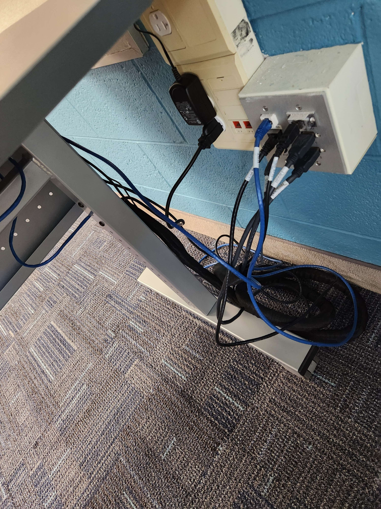
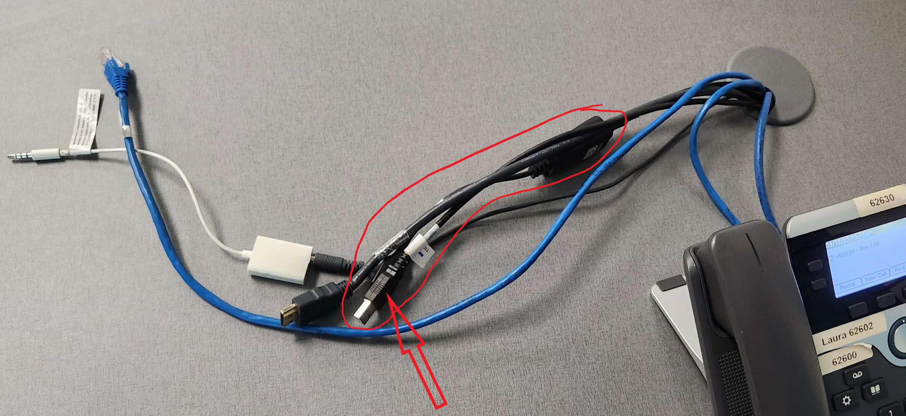
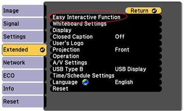
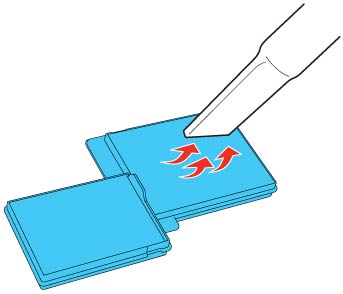

WLCSD uses Epson projectors that feature a touch unit that allows teachers and students to write on the projector screen and interact with the computer screen.
Teachers can show videos, slideshows, and doucments on the projector using the document camera.
Step 1:
Make sure that the HDMI cord labeled for the projector is plugged into the wall slot labeled for HDMI 1.

Step 2:
The HDMI cable will run through the wall, up to where the HDMI splitter (black box) is. Plug the HDMI splitter in if it is not already plugged in (the power cord looks like a little cylinder). Make sure the HDMI cable is plugged into the right slot in the black box. Such as, if you plug the HDMI 1 cable into output one, button one/mode one will enable that device for the projector output. Most of the HDMI spliters will be labeled already, so just plug the proper HDMI cords into the proper slots.
Step 3:
Plug the HDMI cable into your computer

Step 4:
Turn the projector on with the white Epson remote by double clicking the power button. You can also double click the projector power button itself to turn it on. The projector should now connect to whatever device you plugged the HDMI cable into.
Touch Screen
To enable the touch screen, take the cable that looks like an ethernet cord that is converted into an USB cable and plug it into your computer. The projector has two modes for the touch screen: pen mode and PC interaction mode. If you want to switch between modes you must touch the projector. A small menu on the right will appear, from there you can switch between settings.

Touch Screen
Make sure the touch unit is turned on by checking the white box above the projector screen. It should have a blue light that is turned on the right.

Touch Screen
If the touch unit is not turned on, go to the Epson projector settings. Then go to "extended" in the settings. Select "Easy Interactive Function," and then select the settings for the touch unit setup. Enable the power setting to turn the touch screen on.


Make sure you clean your projectors filter out every month to increase its lifespan and prevent overheating.